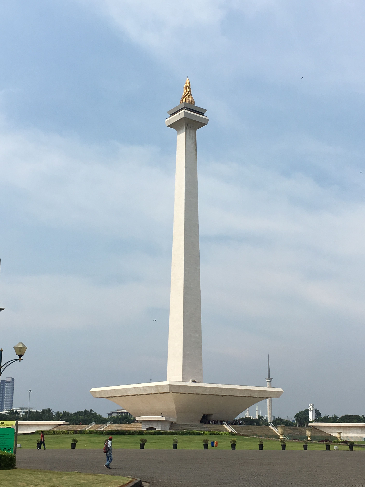
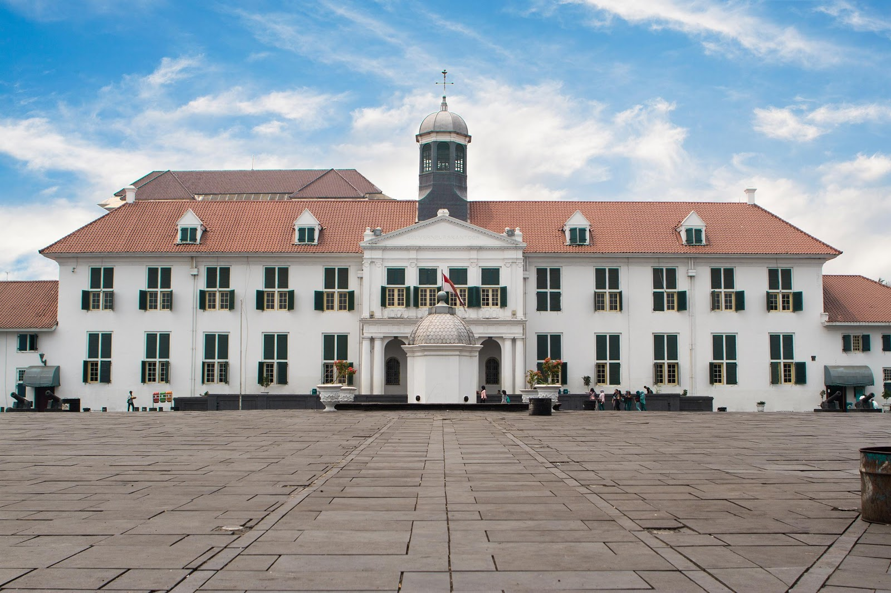

Monumen Nasional (Monas)
Monumen Nasional atau Monas adalah ikon Jakarta yang tak boleh dilewatkan. Wisata di Jakarta yang bagus ini menawarkan pengalaman menaiki monument setinggi 132 meter dan menikmati panorama kota dari ketinggian. Monas juga memiliki museum sejarah di bawahnya yang menceritakan perjalanan bangsa Indonesia. Taman luas di sekitar Monas cocok untuk piknik atau sekadar bersantai. Di malam hari, air mancur menari yang berwarna-warni menambah keindahan suasana. Monas adalah saksi bisu perjuangan bangsa sekaligus simbol kebanggaan Jakarta.
Kota Tua
Wisata di Jakarta yang bagus berikutnya adalah Kota Tua, saksi sejarah penjajahan Belanda di Indonesia. Kawasan ini dipenuhi bangunan tua bergaya kolonial yang membawa Anda ke suasana masa lampau. Jalan-jalan di Taman Fatahillah, kunjungi Museum Sejarah Jakarta, dan nikmati kelezatan kuliner Kota Tua adalah hal wajib dilakukan. Kota Tua juga terkenal sebagai surga bagi pecinta fotografi. Setiap sudutnya menawarkan latar foto yang unik dan instagramable. Baik siang maupun malam, pesona Kota Tua tak pernah pudar. Wisata di Jakarta yang bagus ini memadukan sejarah, seni, dan kuliner dalam satu paket lengkap.
Kepulauan Seribu

Ingin merasakan suasana pantai tanpa keluar Jakarta? Kepulauan Seribu adalah jawabannya. Gugusan pulau-pulau indah di utara Jakarta ini menawarkan pasir putih, air biru jernih, dan ketenangan yang sempurna untuk melepas penat. Beberapa pulau populer seperti Pulau Tidung, Pulau Pramuka, dan Pulau Macan menawarkan resor dan aktivitas menarik seperti snorkeling, diving, atau sekadar berjemur. Wisata di Jakarta yang bagus ini membuktikan bahwa surga tropis itu dekat dan mudah dijangkau.